01
PYTHON · CONSOLE APPLICATION
PC-Kiosk
PC방 회원·비회원 로그인부터 시간 충전, 음식 주문, 장바구니와 결제까지 구현한 콘솔 키오스크 시뮬레이터입니다.
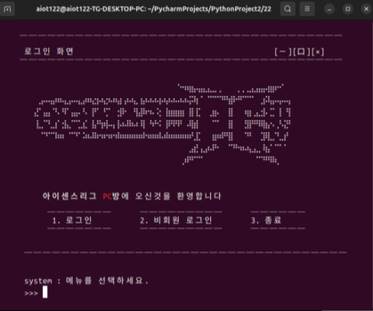
01 / ABOUT
화면에 보이는 기능뿐 아니라 데이터가 흐르는 과정과 장치가 반응하는 순간까지 고민합니다. 서버·클라이언트 통신, 데스크톱 UI, 데이터베이스, 영상 인식과 하드웨어 제어를 연결하며 하나의 완성된 시스템을 만드는 경험을 쌓고 있습니다.
02 / SELECTED PROJECTS
07 Projects
PYTHON · CONSOLE APPLICATION
PC방 회원·비회원 로그인부터 시간 충전, 음식 주문, 장바구니와 결제까지 구현한 콘솔 키오스크 시뮬레이터입니다.

C · TERMINAL GAME
주사위 판정, 직업별 원정대, 무작위 이벤트와 5개 던전으로 구성한 Linux 터미널 로그라이크 RPG입니다.
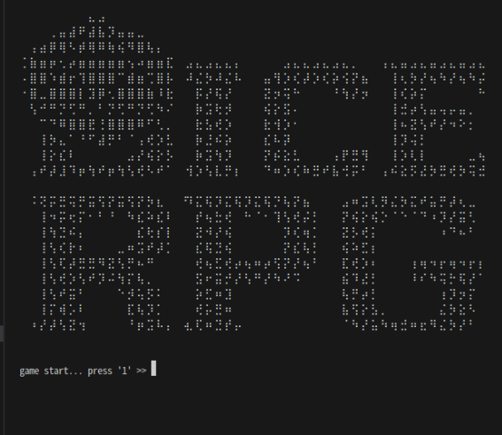
QT · TCP MULTIPLAYER
회원·채팅·게임방·투표 시스템과 서버 주도 게임 진행을 구현한 Qt 기반 멀티플레이 라이어 게임입니다.
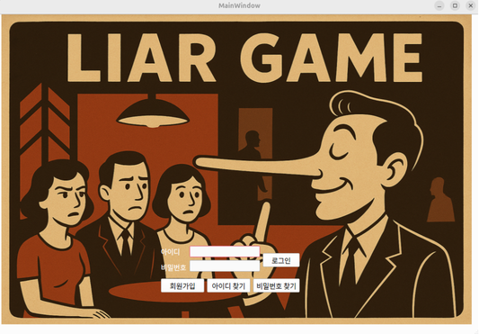
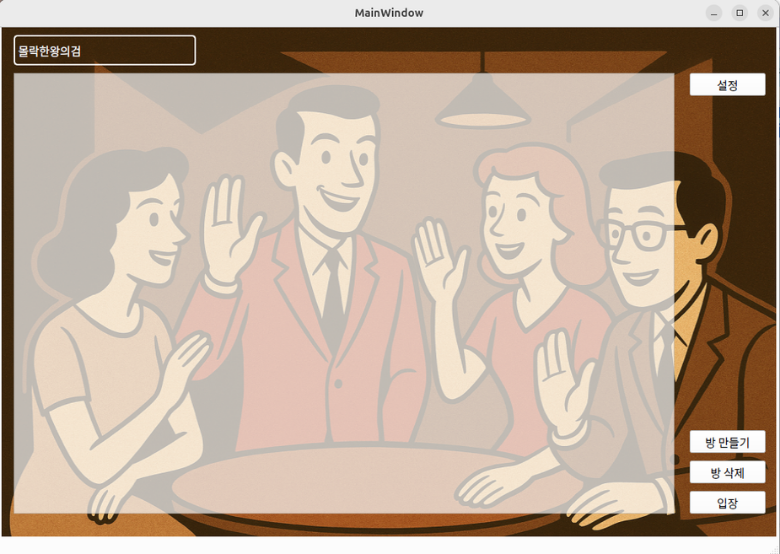
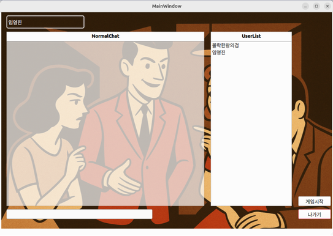
VISION · EMBEDDED
Qt와 OpenCV 얼굴 인식 결과를 Bluetooth·Serial 통신으로 Arduino 도어락과 연결한 스마트홈 프로토타입입니다.
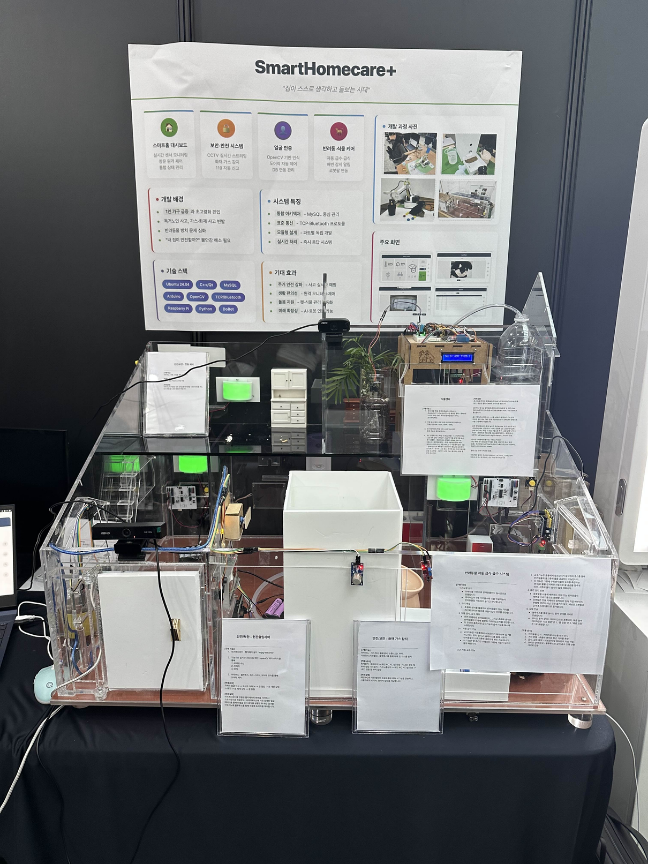
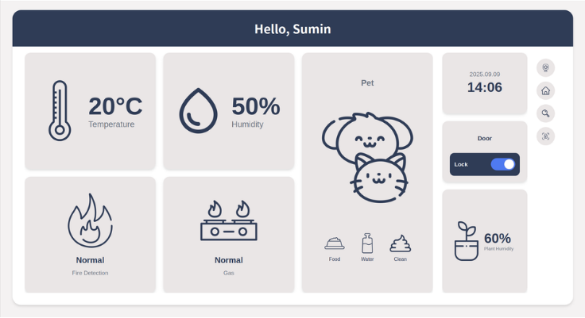
.NET · NETWORK GAME
서버 권위형 물리 처리와 실시간 상태 동기화로 여러 사용자가 함께 진행하는 WinForms 협동 플랫폼 게임입니다.
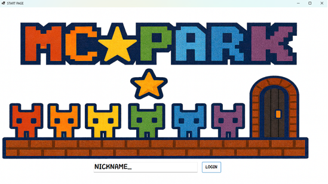
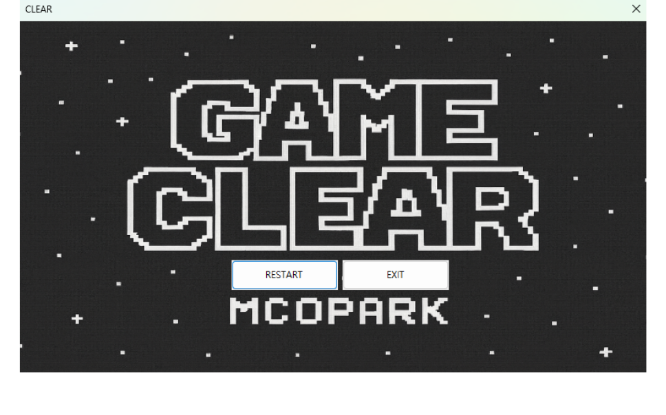
AI · INDUSTRIAL VISION
Basler 카메라와 MFC 클라이언트, C# 중계 서버, Python YOLO 추론을 연결한 제품 품질 검사 시스템입니다.
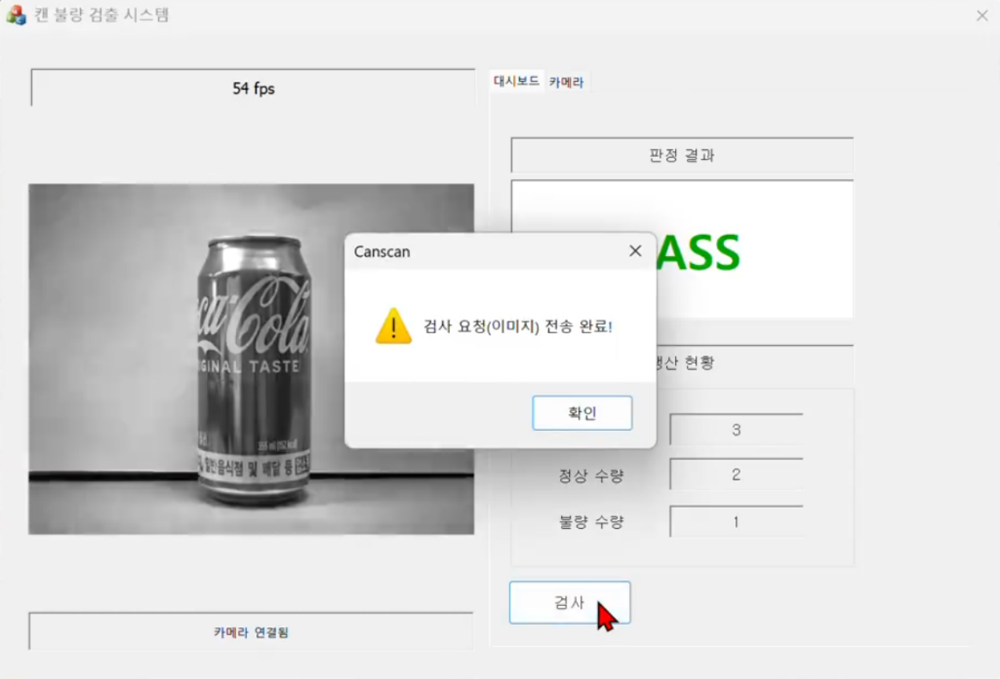
WPF · ROBOT CONTROL
WPF 원격 제어 UI와 C# 라우팅 서버, Python DOBOT 제어를 통합한 차량 원격 제어 시스템입니다.
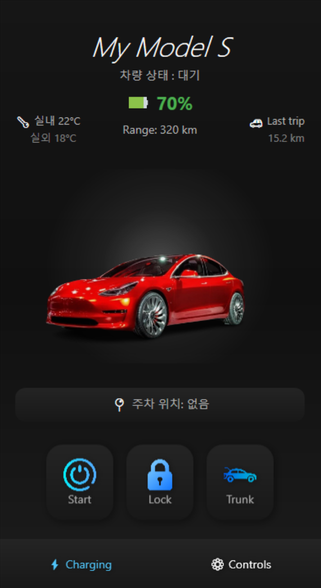
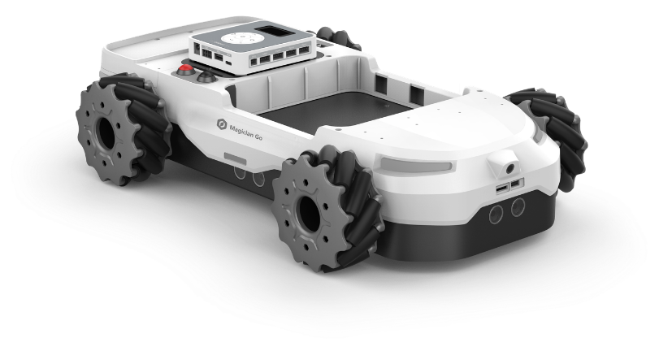
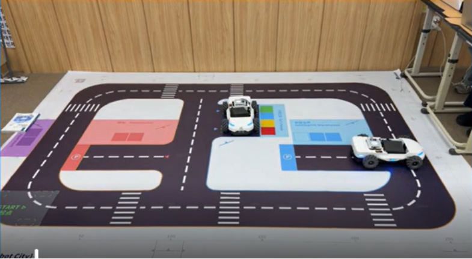